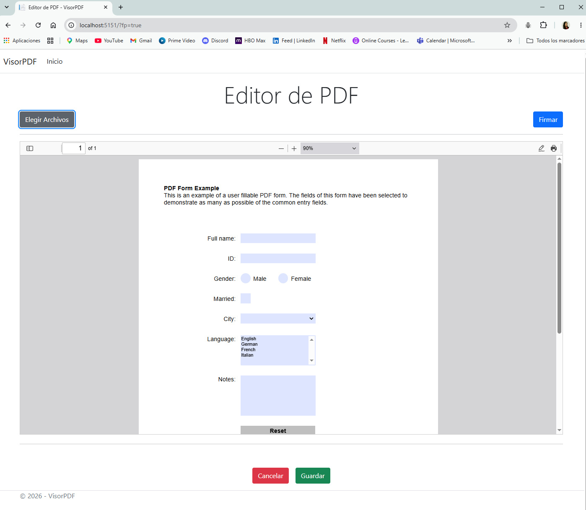
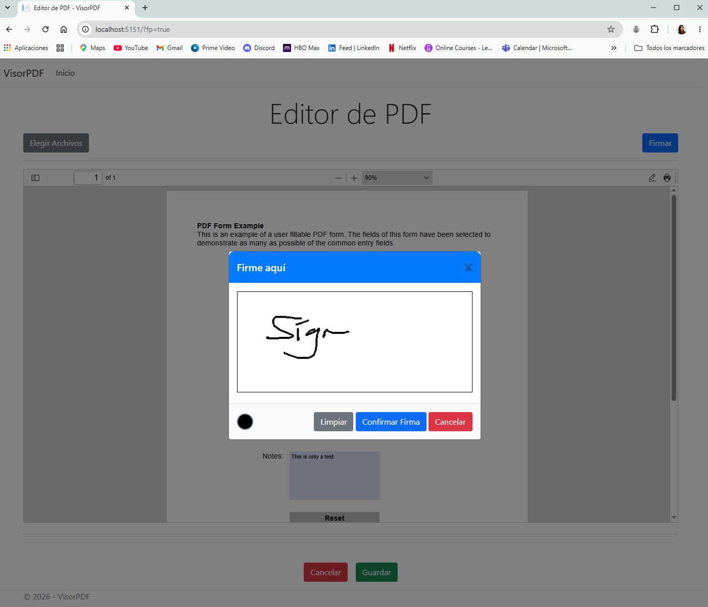
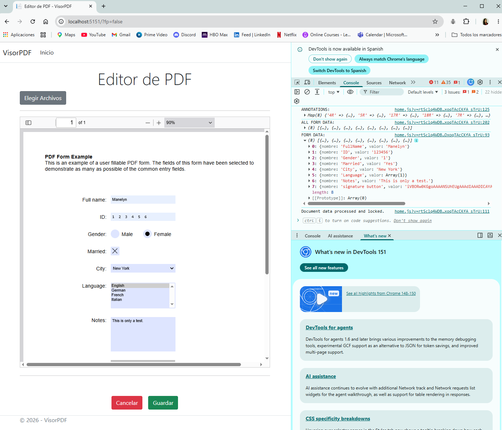

📄 VisorPDF – PDF Form Editor & Data Processing Tool
A web-based PDF form editor and data processing tool developed during my Frontend Development internship at Evolk Bigo Solutions. The project integrated PDF functionality into an existing ASP.NET MVC application.
Project Overview
The project focused on working with interactive PDF documents, editable form fields, annotations, digital signatures, and extracted form data. I worked with JavaScript and different PDF libraries to explore and implement the required functionality within the existing application.
The project also involved testing different approaches for displaying, handling, and processing PDF form information before integrating the selected solutions into the ASP.NET MVC environment.
What I Worked On
- Interactive PDF form display and field handling
- PDF form field name and value extraction
- Conversion of extracted form data into structured JSON
- Ink annotation functionality
- Digital signature capture
- Base64 processing of captured signatures
- Frontend interaction and DOM manipulation
- Adapting existing code within an ASP.NET MVC project
Technologies Used
Project Screenshots



Key Learning
This project gave me practical experience working with an existing web application, debugging and adapting code, handling user input, processing data, and integrating JavaScript-based functionality with a backend application environment.